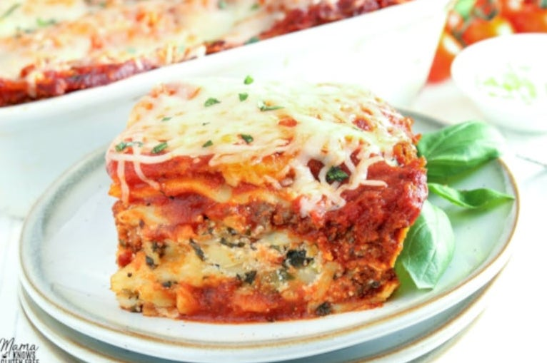

Gluten Free Lasagna

Description
An easy recipe for gluten-free lasagna. Layers of gluten-free lasagna noodles, three different cheeses, and a savory meat sauce.
Ingredients:
- 1 pound lean ground beef
- 1 teaspoon of salt
- 1 tablespoon onion powder
- 2 tablespoons Italian Seasoning
- 2 24-ounce jars jar gluten-free pasta sauce
- 1 12-ounce bag frozen chopped spinach
- 1 15-ounce container ricotta cheese
- 1 cup Parmesan cheese
- 1 16-ounce bag shredded mozzarella cheese
- 1 box Barilla Gluten Free Oven-Ready Lasagna
Steps
- Preheat oven to 425°F. Spray a 9-inch x 13-inch baking pan with gluten-free cooking spray.
- Spray a large skillet with gluten-free cooking spray. Add the beef and sprinkle with salt. Cook the beef over medium-high heat, until it starts to brown. Add the onion powder, garlic powder, and Italian seasoning and stir until fully combined.
Cook the meat until no pink remains. Drain any fat.
- Stir in the gluten-free pasta sauce and simmer for 5 minutes. Remove from heat.
- Prepare the chopped spinach according to the bag's directions. Allow to cool, then squeeze out and drain the excess water.
- In a large bowl, combine the chopped spinach, ricotta cheese, and the parmesan cheese. Mix until fully combined.
- Pour 1 cup of the meat sauce on the bottom of the greased baking dish and spread evenly. Place four sheets of the lasagna noodles side-by-side, they will slightly overlap. Top the lasagna sheets with 1 cup of sauce. Spread ¼ of the ricotta mixture over the sauce, and then top with ¼ of the mozzarella cheese.
- Repeat for 3 more layers. Top the last lasagna sheet with the meat sauce and sprinkle with mozzarella cheese
- Spray a piece of aluminum foil with gluten-free cooking spray. Cover the pan with the greased foil and bake for 40 minutes. Uncover and bake an additional 20 minutes, or until browned and bubbly. If the lasagna noodles are puffing up after baking for 40 minutes, take a knife and poke a few holes in the top and flatten with a spatula. Sprinkle more cheese over the top and bake for the final 20 minutes.
- Allow the lasagna to rest 10-15 minutes before cutting. Enjoy!
- Save leftovers in an airtight container and refrigerate. Reheat leftovers in the microwave or oven.